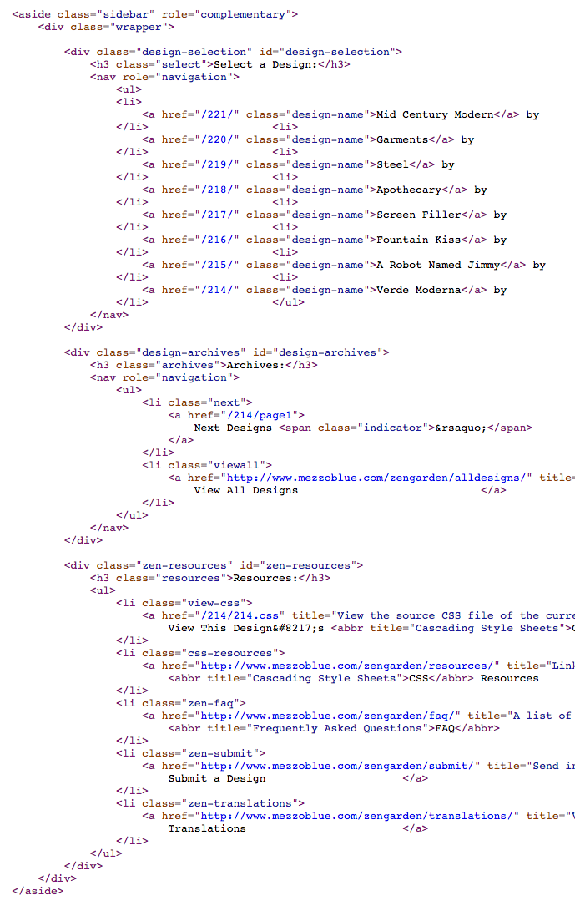
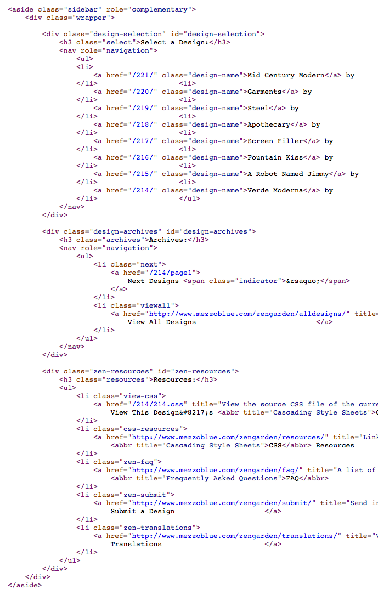

Automatic Checks for the People


 



Pre-commit
pre-commit.com
Code formatting
PEP 8
aka.
pycodestyle
github.com/PyCQA/pycodestyle
YAPF
github.com/google/yapf
Valid code
- valid Python
- valid bash script
- valid Ruby
- buildable Go
- ...
Valid code
- docstring existance
- debug statements
- merge conflict strings
- trailing whitespace
- end of file whitespace
- ...
Valid code
- valid JSON
- valid YAML
- valid TOML
- valid XML
- ...
Imports sorting
Dependencies sorting
CI
Coverage decrease
Prospector
github.com/PyCQA/prospector
PyLint, PyFlakes, pydocstyle, McCabe, Dodgy...
Bandit
github.com/PyCQA/bandit
MyPy
github.com/python/mypy
Docker linter
github.com/hadolint/hadolint
Terraform
Where to start?
Formatting
Formatting
One commit
Formatting
Boy scout rule
Checks
Down the line